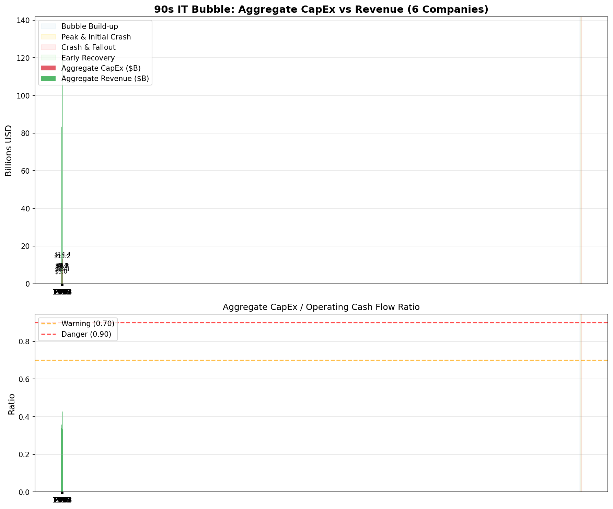
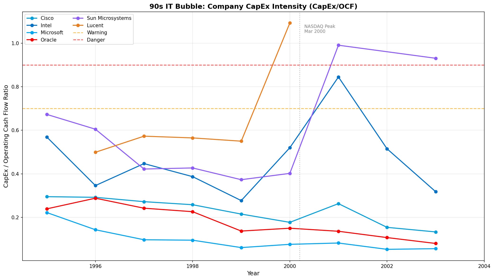
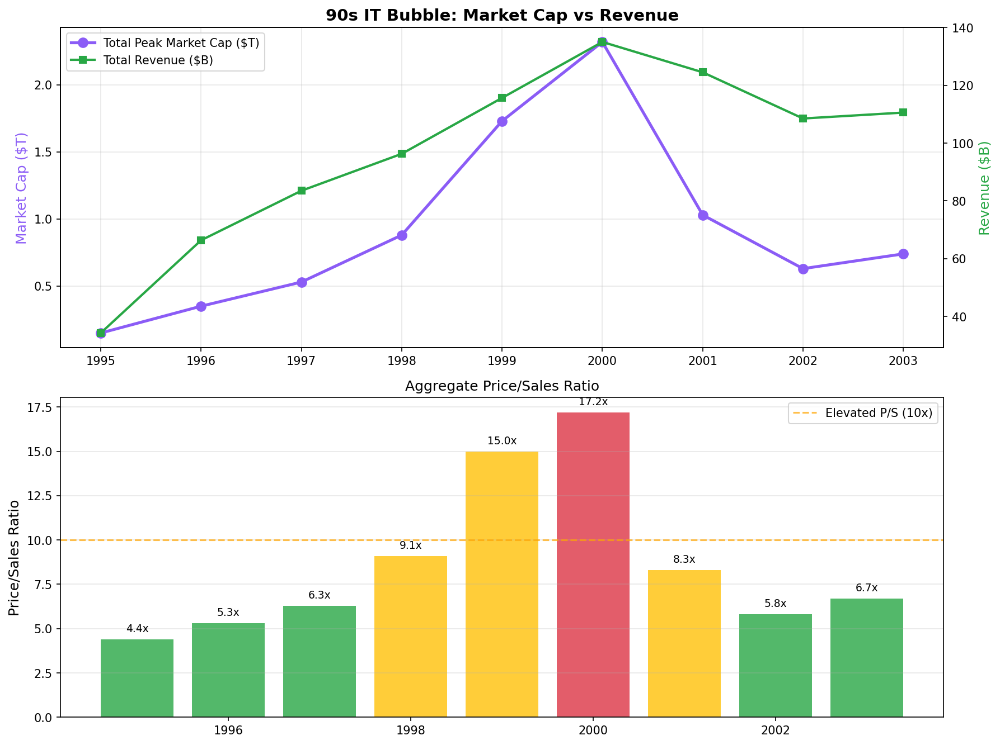
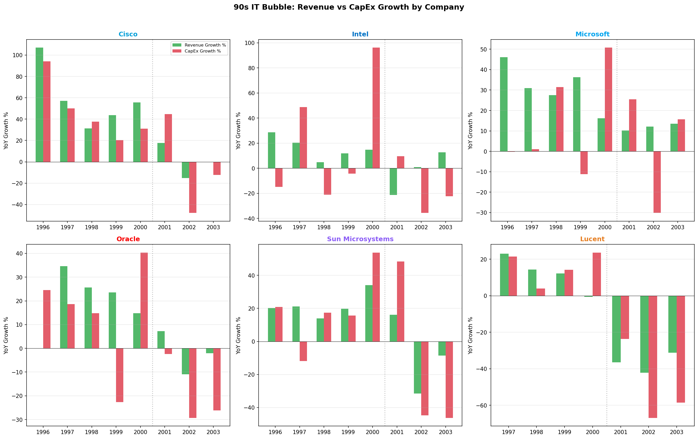

90s IT Bubble Historical Validation
Validating AI Funding Risk Early Warning System against the 1995-2003 IT/Telecom Bubble
Yearly Aggregate Metrics (6 IT Infrastructure Companies)
| Year | Total Revenue | Total CapEx | CapEx/OCF | Peak Market Cap | Risk Level |
|---|---|---|---|---|---|
| 1995 | $34.2B | $5.0B | 0.456 | $0.15T | LOW (29.0) |
| 1996 | $66.4B | $6.4B | 0.342 | $0.35T | LOW (20.0) |
| 1997 | $83.5B | $8.4B | 0.358 | $0.53T | LOW (29.0) |
| 1998 | $96.3B | $8.0B | 0.310 | $0.88T | LOW (20.0) |
| 1999 | $115.7B | $8.2B | 0.238 | $1.73T | LOW (20.0) |
| 2000 | $135.0B | $13.2B | 0.333 | $2.32T | LOW (38.0) |
| 2001 | $124.5B | $14.4B | 0.428 | $1.03T | LOW (20.0) |
| 2002 | $108.5B | $8.3B | 0.257 | $0.63T | LOW (20.0) |
| 2003 | $110.6B | $6.3B | 0.173 | $0.74T | LOW (20.0) |
Charts





Warning Signals That Preceded the 2000 Crash
- Capex growth consistently outpacing revenue growth (1998-2001)
- Aggregate capex-to-cashflow ratio rising above 0.50 threshold
- Massive employee hiring despite slowing revenue growth
- Companies funding capex through debt issuance rather than operations
- Market cap disconnection from fundamental metrics
- Credit spreads initially tight then rapidly widening in 2001-2002
Comparison with Current AI Bubble
Similarities
- Dominant infrastructure companies spending heavily on buildout
- Market expects exponential growth to justify capex
- Low interest rates enabling cheap debt financing
- High capex-to-cashflow ratios across sector leaders
- Revenue growth strong but potentially unsustainable
Differences
- 90s IT companies had lower profit margins than current AI leaders
- Current AI companies (except Oracle) carry less debt relative to cash
- 90s capex was more hardware-intensive (factories, fiber optic cables)
- Current AI companies are more profitable and cash-flow positive
- Market concentration is higher in current AI wave (fewer dominant players)
Generated: 2026-02-17 22:49:33 | AI Funding Risk Early Warning System - Historical Validation Module